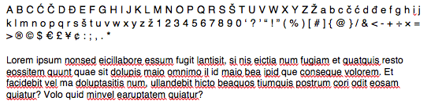
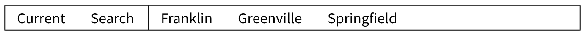
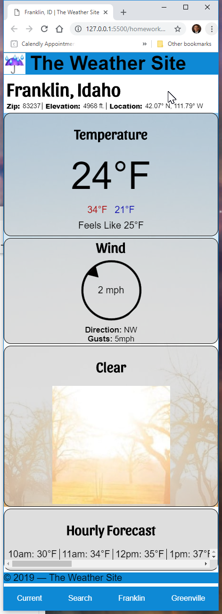

Purpose
>The purpose of The Weather Site is to give current weather conditions in 3 different ways. The initial page will give the weather for the current location based on the Geocoding location information from the device. The second is weather for 3 specific locations accessible through a dedicated link, and the third is weather for any location determined by a search string.
Audience
Primary audience is adults ages 18-30. Most will be students. Access to the site will be split between mobile devices and laptops. A secondary audience will be anyone interested in weather.
Audience Goals:
College students move around quite a bit so one goal would be to quickly get the weather conditions for their current location as they head off to class or study. They are also often far from their homes so the ability to quickly get the conditions for a specific location is important as well. The third goal deals with planning for travels...the ability to get weather conditions for any location will help with last minute packing for road trips.
Persona

- Name: Joe Cool
- Occupation: > student
- Age: Eternally 18
- Interests: Traveling, Flying, Play acting, Eating
- Motivation: Joe is not into planning. His last minute scrambling, whether it is getting to class in the morning or heading out on his latest adventure, has left him unprepared for weather conditions many times (He is tired of sleeping in the rain and snow). He would like to be more prepared...without having to put much effort into it...or planning.
- Environment: Joe is comfortable using laptops and Mobile devices, he will most often be found on a smart phone however. Many of the places he frequents do not have great signal…he is often dealing with 3G speeds
Content
All weather pages should include location name, current temperature, forecast high, forecast low, current weather descriptor, forecast percentage of precipitation, and current wind speed and direction on small devices and hourly temps should be added on larger screens. The pages of the Weather Site will be built in the following order:
Pages
- 1. Franklin and Greenville weather for each specific location.The weather for these pages should be pulled from the weather.JSON file that will be provided.
- 2. Current: weather for the current location. Current location should be determined by using the Geolocation API of the browser. This information should be passed to the National Weather Service (NWS) API to retrieve the current conditions.
- 3. Search: Begins with only a search box, characters entered will cause a list of suggested matches to appear. Selected location will pull up the weather.
Styles
Branding
The Weather Site
The name should be bold & italicStyles
Typography
Heading Font: Sansita From Google Fonts

Body Copy Font: Helvetica 
Colors

Elements
(add title attribute to each anchor)
Navigation:
 Font and color scheme will be determined by you in consultation with your learning team using the supplied fonts and color swatches.
Opaque rounded content box:
 background-color: rgba(200,200,200,.6);
margin: .2em auto;
border: 1px solid;
border-radius: 15px;
background-color: rgba(200,200,200,.6);
margin: .2em auto;
border: 1px solid;
border-radius: 15px;
Wireframes
Small screen
Large Screen

This is no done yet. More is to come in the followng weeks.